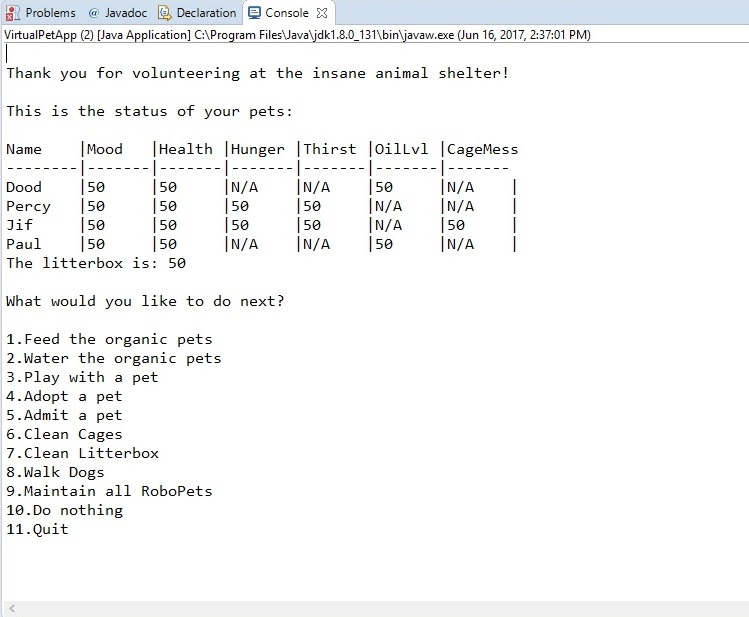

Virtual Pets Amok
2017
Technology: Java
Skills: Utilized 8 classes and 2 interfaces. Introduced encapsulation and use of interfaces and related methods and constructors. Utilized a map, a game loop and a tick method.
Student: We Can Code IT
Columbus, OH
614-209-0458
Skills
Java
HTML/CSS
Javascript
My name is Cindy Colucy. I am currently a full-time bootcamp student at We Can Code IT, learning Java, HTML, CSS and Javascript. Prior to raising my children I had experience in retail allocation systems, where I had the opportunity to coordinate the implementation of a new allocation system, so I am retooling my IT experience. For ten years, as I was raising my children, I was an extensive volunteer. I worked on projects such as local government, environmental action, volunteered mentoring youth. In my spare time I enjoy hanging out with my three sons and my dog, yoga, and community service. I entered the We Can Code IT bootcamp because of a general interest in technology, but through this unique educational experience have truly developed a passion for coding. I try to code every day. I would enjoy combining my organizational and interpersonal skills with coding experience.
Technology: Java
Skills: Utilized 8 classes and 2 interfaces. Introduced encapsulation and use of interfaces and related methods and constructors. Utilized a map, a game loop and a tick method.
Technology: Java
Skills: Utilized multiple classes and related methods and contstructors. Introduced intstance variables, use of a map, a game loop and a tick method.
Technology: Java
Skills: Introduced user input, if/else if, and switch/case.
Java, HTML, CSS, Javascript
Bachelor of Arts